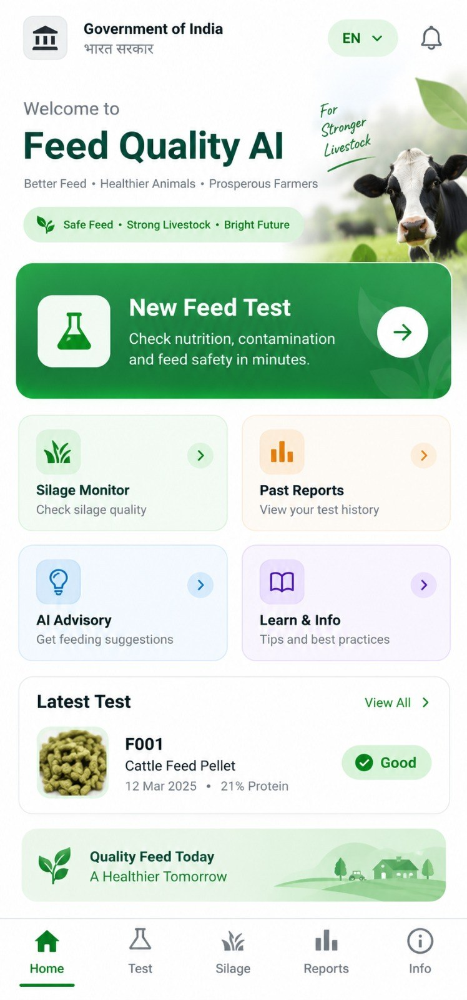
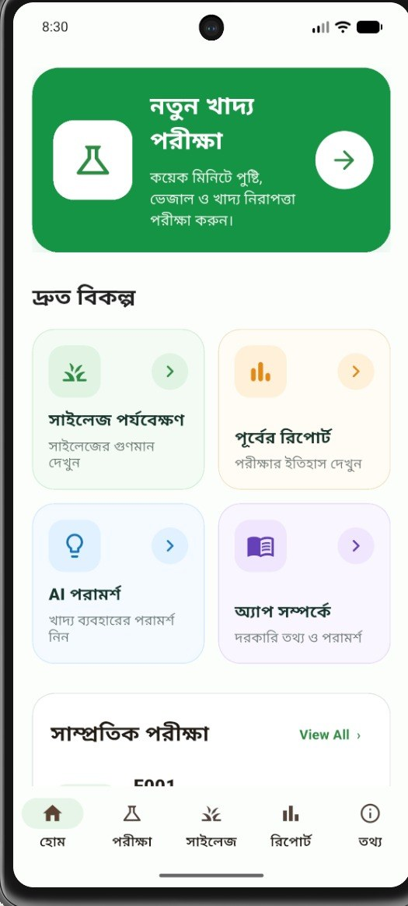
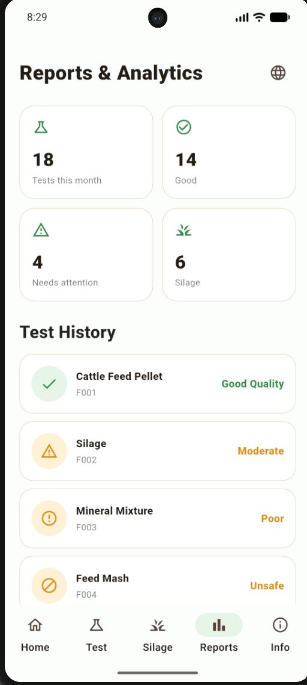
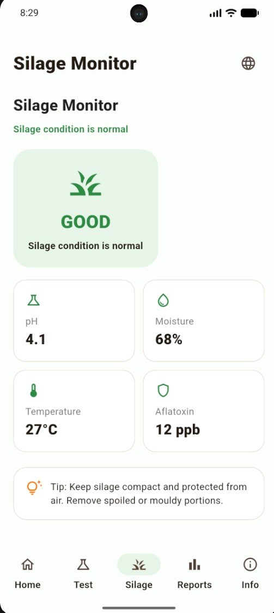
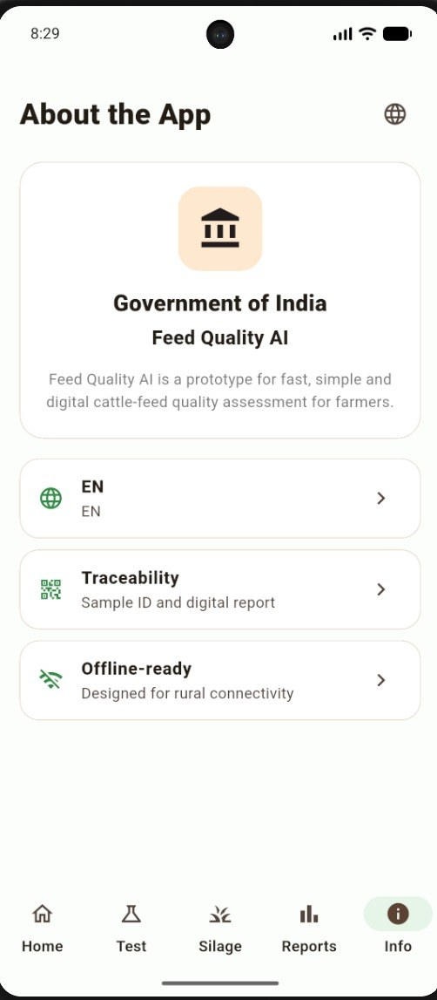
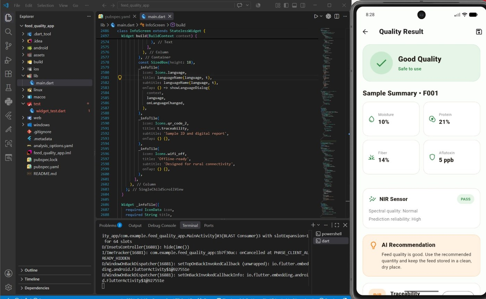
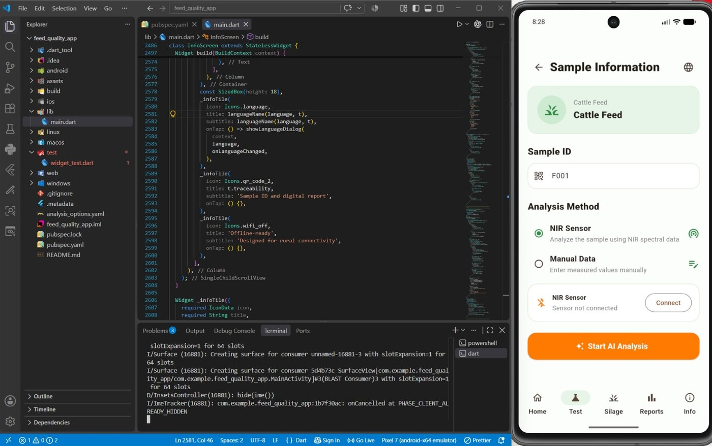

NIR Feed AI
AI-assisted cattle-feed quality assessment combining NIR spectroscopy, machine learning, spectral anomaly detection, computer vision, FastAPI and a Flutter mobile application.
NIR spectrum + optional feed image
Turning spectral data into a practical quality workflow.
Feed-quality assessment can involve laboratory testing, specialised instruments and trained personnel. This project explores an AI-assisted workflow that transforms NIR spectral information into nutritional and quality indicators, with optional visual screening.
Nutritional profile
PLS regression estimates CP, NDF, ADF and IVDMD from NIR spectra.
Moisture
A separate model handles the 950–1650 nm moisture spectral domain.
Spectral anomalies
PCA distance and Isolation Forest flag unusual spectral patterns.
Visible mould
EfficientNetB0 provides an image-based visible mould screening module.
One pipeline. Multiple AI modules.
The repository separates model assets, inference logic, backend services and computer-vision components so each layer can be developed and tested independently.
↓ Designed for a Flutter-based mobile interface
Prototype evaluation results.
These R² values are recorded in the project's model registry. They describe evaluation results in the project's dataset context—not universal real-world accuracy.
| Module | Method | Input | R² | Status |
|---|---|---|---|---|
| Crude Protein | PLS | 1050 NIR features | 94.41% | VALIDATED |
| NDF | PLS | 1050 NIR features | 94.01% | VALIDATED |
| ADF | PLS | 1050 NIR features | 94.30% | VALIDATED |
| IVDMD | PLS | 1050 NIR features | 83.16% | VALIDATED |
| Moisture | PLS | 141 features · 950–1650 nm | 92.75% | VALIDATED |
See how the prototype works in the farmer-facing app.
The Flutter interface turns the model pipeline into a simple workflow: start a feed test, select the analysis method, review results, monitor silage, and access reports and guidance.
Home → Feed Test → App informationFlutter UI





The screenshots show the implementation behind the interface.
The mobile screens are not just mockups: the project was implemented and tested in Flutter with the backend-oriented workflow visible in the development environment.

Inference result screen — Flutter UI connected to the application workflow.

Sample information screen — sample ID, analysis method and sensor workflow.
More than a model: an end-to-end prototype.
Research code is connected to an application-oriented architecture with reusable inference logic, API endpoints and a mobile-facing interface.
Reusable inference pipeline
Centralised model loading and feed-analysis logic keeps inference behaviour consistent.
FastAPI backend
REST endpoints return structured outputs for application integration.
Computer vision
EfficientNetB0 processes 224×224 RGB input with a 0.60 screening threshold.
POST /analyze { "nutrition_spectrum": [1050 values], "moisture_spectrum": [141 values], "image": optional } → nutrition predictions → moisture prediction → spectral anomaly signals → visible-mould screening → consolidated quality result
Built with validation in mind.
A strong prototype should be clear about what the current evidence supports—and what still needs research.
See the project, not just the pitch.
The complete source, model organisation, backend and research workflow are available in the GitHub repository.